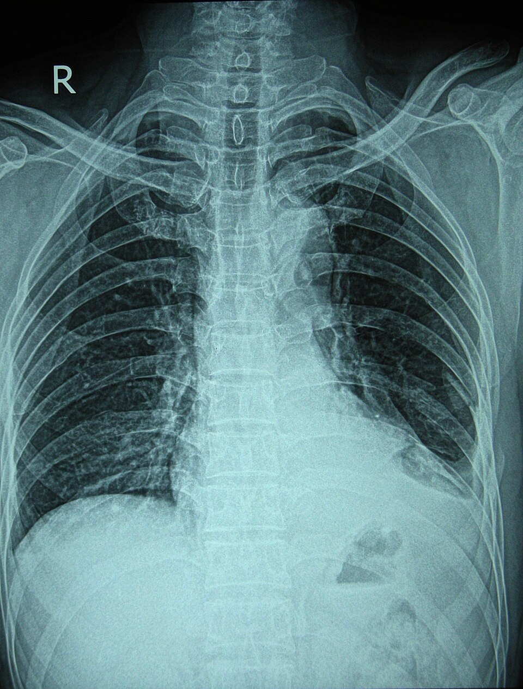

지난 시간에 만든 mcp-lab 폴더를 그대로 씁니다. 새 실습 파일을 받고 동작을 확인하는 데 네 줄이면 됩니다.
# 1. Ollama 앱이 켜져 있는지 확인 (메뉴 막대의 라마 아이콘) # 2. 터미널에 그대로 붙여 넣기 cd ~/mcp-lab git checkout . git pull bash setup.sh
git checkout .은 지난 시간의 실행 흔적을 지웁니다. 노트북 파일 이름이 바뀌어서 필요합니다.
지난 시간에 받은 모델 외에 약 10GB를 더 받습니다. 15~40분 걸립니다.
지난 시간에 준비를 못 했다면 약 16GB, 20~60분입니다.
한 명에게 도구 스무 개를 주면 엉뚱한 도구를 고릅니다. 전문가마다 두세 개만 주면 고를 것이 줄어듭니다.
"너는 논문만 찾는다"처럼 지시문이 짧아집니다. 틀렸을 때 누구의 어느 부분을 고칠지도 바로 보입니다.
세 명이 한꺼번에 조사하면 한 명이 차례로 하는 것보다 빨리 끝납니다.
| 부품 | 사례 (AWS 위에서) | 오늘 실습 (내 컴퓨터에서, 무료) |
|---|---|---|
| Agent를 만드는 틀 | Strands Agents | Strands Agents (같은 것) |
| 전문가와 지휘자의 두뇌 | Amazon Bedrock의 Claude | Ollama의 gemma4:e4b |
| 분자 특성 | SageMaker에 올린 TxGemma가 예측 | RDKit이 공식으로 계산 |
| 조사하는 곳 | PubChem, ChEMBL, PubMed, ClinicalTrials.gov, OpenFDA | PubChem, PubMed, ClinicalTrials.gov, openFDA |
| 전문가 | 보는 것 | 쓰는 도구와 하는 일 |
|---|---|---|
| 의약화학 | 구조, 물리화학적 특성 | compound_info약 이름으로 PubChem에서 기본 정보와 구조식 찾기molecule_properties구조식으로 분자량, 지용성 같은 특성 계산 (RDKit)similar_compoundsPubChem에서 구조가 비슷한 화합물 찾기 |
| 임상약리 | 안전성, 독성, 상호작용 | pubmed_searchPubMed에서 논문 찾기adverse_eventsopenFDA에 보고된 부작용과 보고 건수 보기 |
| 임상·규제 전략 | 임상시험 현황, 허가 경로 | clinical_trialsClinicalTrials.gov에서 임상시험 찾기pubmed_searchPubMed에서 논문 찾기 (임상약리와 같은 도구) |
해 볼 것: 노트북 2-2에서 약 이름을 바꿔 보고(영문 성분명), 질문에 따라 불리는 전문가가 달라지는지 확인합니다.
# 1번: 큰 모델에게 "누구에게 보낼까?"를 묻는다 # 답의 형식을 정해 주면 이름 목록만 돌아온다 schema = {"experts": { "type": "array", "items": {"enum": ["reader", "cases", "literature"]}}} r = ollama.chat(model="gemma4:e4b", format=schema, messages=[전문가_소개, 질문]) # 질문: "비슷한 사례가 있어?" # 답: {"experts": ["cases"]}
| 전문가 | 맡은 일 | 쓰는 도구 |
|---|---|---|
| 영상 판독 보조 | 사진을 직접 다시 보고 답하기 | look_at_image 사진을 읽는 모델 |
| 유사 사례 | 판독이 끝난 과거 사례와 비교 | search_similar_cases Embedding(임베딩) 검색 |
| 문헌 | 논문 근거, 감별할 질환, 추가 검사 | pubmed_search |
발표자 맥에서 종합 검토는 약 80초, 전문가 한 명만 부르는 질문은 25~40초 걸렸습니다. 사진은 모두 공개 라이선스 자료입니다.

| 방법 | 하는 일 | 필요한 것과 한계 |
|---|---|---|
| 1. 좁혀서 묻기 | 사진을 줄이지 않고, 의심 부위를 잘라 주고, 질문을 구체적으로 합니다 | 돈이 들지 않습니다. 모델이 사진을 작게 줄여서 보기 때문에 효과는 작습니다 |
| 2. 의료 영상을 배운 모델 | 범용 모델 대신 의료용 공개 모델(MedGemma 등)이나 허가받은 판독 보조 제품을 씁니다 | 더 큰 컴퓨터나 구매 비용. 배운 종류의 사진에서만 잘합니다 |
| 3. 내 자료로 더 학습 | 전문의가 정답을 붙인 사진으로 모델을 더 학습시킵니다 (Fine-tuning) | 정답이 붙은 사진과 GPU. 정답은 사람이 붙여야 합니다 |
| 4. 시험으로 재기 | 정답을 아는 사진 묶음으로 얼마나 맞히고 얼마나 놓치는지 숫자로 확인합니다 | 정답이 있는 시험 자료. 재기 전에는 믿지 않습니다 |
# my_team.py # ① 도구: 평범한 함수. 설명글을 보고 Agent가 고른다 def bmi(height_cm: float, weight_kg: float) -> dict: """키와 몸무게로 체질량지수를 계산한다.""" ... # ② 전문가: 맡은 일, 지시문, 쓸 도구 experts = { "lifestyle": { "title": "생활습관 전문가", "role": "식단, 운동, 체중에 관한 것", "prompt": "너는 생활습관을 상담하는 전문가다…", "tools": [bmi], }, ... } # ③ 팀: 이름과 목표 TEAM = Team(name="checkup", goal="건강검진 결과 상담 팀", experts=experts)
"누구에게 보낼까"는 답의 종류가 몇 가지뿐인 쉬운 판단입니다. 이런 일까지 큰 모델을 부를 필요는 없습니다.
| 스승 | 제자 | |
|---|---|---|
| 모델 | gemma4:e4b | gemma-3-1b |
| 크기 | 9.5GB | 스승의 10분의 1 이하 |
| 하는 일 | 무엇이든 | 전문가 고르기 하나만 |
발표자 맥(M1 Max)에서 네 번 돌린 범위입니다. 실행할 때마다 조금씩 달라집니다.
# 노트북 2-3의 "5. 서비스로 띄우기" 셀을 실행 start_service("xray_team") # 20초쯤 뒤 브라우저가 저절로 열립니다 # 안 열리면 셀 아래에 나온 주소를 누릅니다 # 내 팀은 이름만 바꿔 다시 실행합니다 start_service("my_team")
끌 때는 stop_service(). 내 컴퓨터 안에서만 열립니다.
증류를 마친 뒤에는 노트북 2-4의 마지막 셀로 다시 띄웁니다.
# 노트북 2-3의 5번에 있는 셀을 실행 (한 번만) connect_kiro("--dev") # 늘 쓰는 일은 묻지 않게 open_kiro() # Kiro에서 실습 폴더 열기
Kiro가 열리면 폴더를 믿는다를 고르고 채팅창에 입력합니다.
모델은 auto로 둡니다. 무료 요금제는 한 달 50 credit이니 한 번에 할 일을 분명하게 적습니다.
| 묻지 않고 하는 일 | 여전히 묻는 일 |
|---|---|
| 실습 파이썬 실행 | 파일 삭제, git push |
| 파일 보기, git 상태 보기 | 패키지 설치, 모델 받기 |
| mcp-lab 폴더 안의 파일 고치기 | 증류 학습 |
| 실습 MCP 도구 부르기 | 그 밖의 모든 명령 |
connect_kiro("--dev-all")아무것도 묻지 않고 전부 합니다. 모든 폴더에 적용되니 실습 때만connect_kiro("--dev-off")로 되돌립니다.kiro/steering/mcp-lab.md. 내 규칙을 더하려면 이 파일을 고칩니다| 부품 | 오늘 (내 컴퓨터) | AWS에서 | 달라지는 점 |
|---|---|---|---|
| Agent 틀 | Strands Agents | Strands Agents | 코드가 거의 그대로 갑니다 |
| 두뇌 | Ollama의 gemma4:e4b | Amazon Bedrock의 모델 | 더 똑똑하지만 쓴 만큼 돈을 냅니다 |
| 증류 | MLX LoRA, 맥에서 5~6분 | SageMaker 학습, Bedrock Model Distillation | 더 큰 모델과 자료로 할 수 있습니다 |
| 서비스 | 내 컴퓨터의 웹 화면 | Bedrock AgentCore, 컨테이너 | 여러 사람이 쓰고, 접근 기록이 남습니다 |
전문가마다 맡은 일과 도구를 좁게 주고, 지휘자가 필요한 사람만 부릅니다. 대신 느려지고 비용이 늘어납니다.
쉬운 판단은 작은 모델에게 가르쳐 맡기고, 큰 모델은 덜 부릅니다. 스승이 틀리는 일을 가르치면 틀린 답을 배울 뿐입니다.
AI는 사진도 글도 틀립니다. 리포트에 "사람이 꼭 확인할 것"을 남기고, 실제 환자 자료는 넣지 않습니다.
data/xray/SOURCES.md